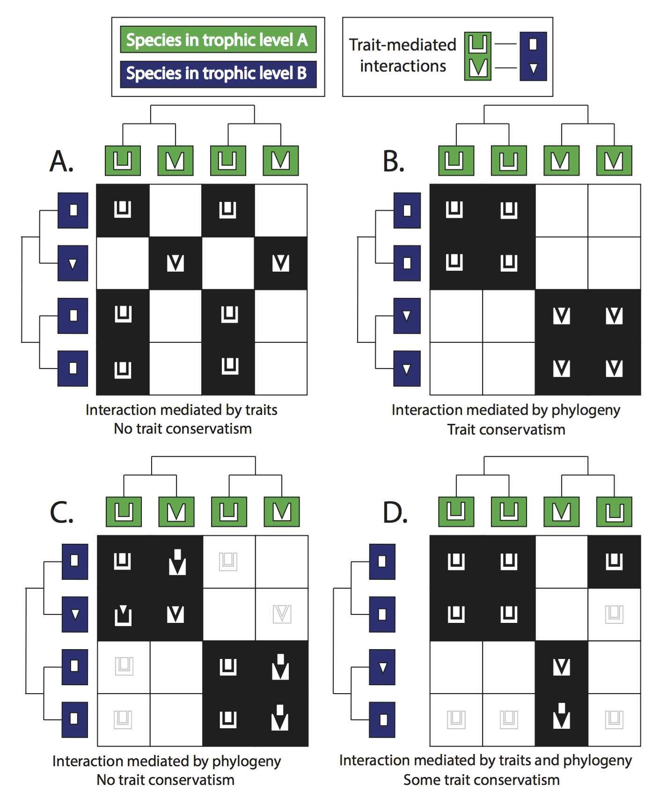
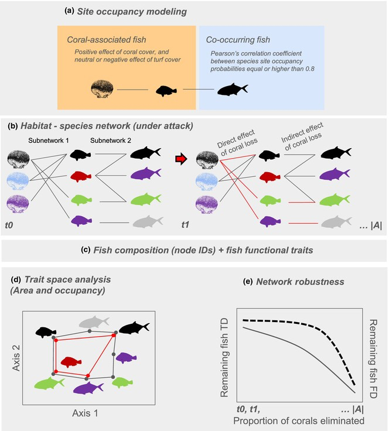
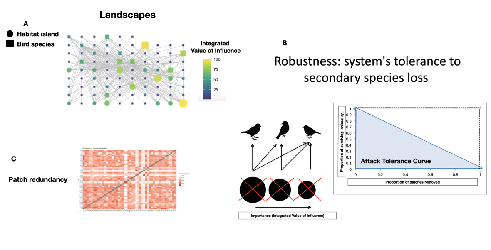

Research
Trait-Based and Evolutionary Structure of Ecological Networks
Ecology is by definition a science of interactions! At its core, it seeks to understand how organisms relate to one another and to their environments, and how these relationships structure ecological communities (Bastazini 2025) and ecosystems. Ecological interactions, such as predation, competition, mutualism, parasitism, and facilitation, operate as critical links across levels of biological organization. They shape population and community dynamics, and ultimately regulate ecosystem functioning and the provision of ecosystem services. Biotic interactions also constitute a fundamental bridge between ecological and evolutionary processes (Bastazini et al. 2017, 2022), as they impose selective pressures that shape species traits, while those traits, in turn, determine the strength, direction, and outcomes of species interactions. Despite this importance for biodiversity scientists, biotic interactions are among the most challenging phenomena to study and quantify in nature. They are often context-dependent, varying across space, time, and environmental conditions (Mestre & Bastazini under review). Given the central role of species interactions in explaining biodiversity processes, there is a need for integrative approaches. These approaches should move beyond simple descriptions of interactions and instead address the multidimensional, multilevel nature of ecological organization. This includes incorporating multiple facets of biodiversity (taxonomic, functional, and phylogenetic) and examining how they relate to network structure, community assembly, and ecosystem functioning. The Ecological Modeling Lab offers novel integrative frameworks that explicitly incorporates functional and evolutionary dimensions into the analysis of networks of interacting species, with the specific goal of improving our understanding oh how ecological community assemble (Bastazini et al. 2017; Figure 1) and reassemble, particularly under current global change scenarios.


Community Persistence and Stability
Understanding how ecological systems respond to disturbances is one of the most central questions in ecology. The rapid growth of the human population and its associated socioeconomic activities has driven a new wave of mass extinctions, compromising ecosystems and the provision of ecosystem on which we depend. In this context, our ability to understand and predict the consequences of disturbances in ecological systems, particularly the loss of biological diversity, has become critically important for informing effective conservation policies (Bastazini et al. 2024). The loss of a single species can trigger cascading effects, leading to secondary extinctions and profound reorganization of ecological communities (Bastazini et al. 2022). It has become increasingly evident that such cascading effects are multifaceted and strongly contingent on species’ functional roles and their evolutionary histories (Bastazini et al. 2022). The magnitude and direction of these cascades depend on how species are embedded in interaction networks, on their traits, and on their phylogenetic history. Our research provides new conceptual and analytical frameworks to link the multidimensional consequences of species loss with cascading effects in ecological communities (Bastazini et al. 2022, Luza […] & Bastazini 2024; Figure 1). Specifically, we examine how species’ traits and evolutionary histories influence co-extinction dynamics, while also assessing how species loss feeds back to erode functional diversity and alter community structure (Bastazini et al. 2022, Luza […] & Bastazini 2024). By explicitly addressing both the drivers and the consequences of cascading effects, our approaches contributes to a more nuanced understanding of how these processes shape the persistence, stability, and resilience of ecological communities and ecosystems under disturbance (Bastazini et al. 2022, 2024, Luza […] & Bastazini 2024).
Biodiversity Across Dimensions: Patterns, Processes, and Global Change Impacts
In parallel, my research has explored population and community ecology processes and patterns, particularly in the context of global change. Global changes pose significant threats to both human societies and biodiversity, but they also offer a unique opportunity to study ecological dynamics by creating novel and unpredictable communities with cascading consequences across different levels of ecological organization. My research has explored these themes through diverse approaches, including assessing the impact of climate warming on species diversity across spatial scales, using a meta-analytical approach (Bastazini et al. 2021), examining how climate change alters ecological populations and communities using empirical data from tropical and subtropical ecosystems (Bergamin et al. 2024, Hofmann et al., in prep.), investigating how species introductions drive the reassembly of ecological communities (Bergamin et al. 2022), analyzing the effects of habitat fragmentation and patchy habitats on populations, communities, and landscapes (Gonçalves et al. 2024; Bastazini et al. 2024a), and how changes in land use affects ecological communities (e.g., Dias et al. 2013, 2017). Furthermore, I have recently expanded my research to address the effects of extreme climatic events and to explore the role of biodiversity in mitigating these impacts on human societies (Bastazini & Hofmann in press). Besides examining community processes and patterns under global changes, I also studied community ecology along environmental and biogeographical gradients to better understand how variations in abiotic and biotic factors shape community structure and dynamics across different ecosystems (e.g., Bergamin et al. 2017, Biz et al. 2023, Duarte et al. 2014, González-del-Pliego & Bastazini in press). This research provides key insights into how ecological communities respond to both natural and human-induced environmental changes.
